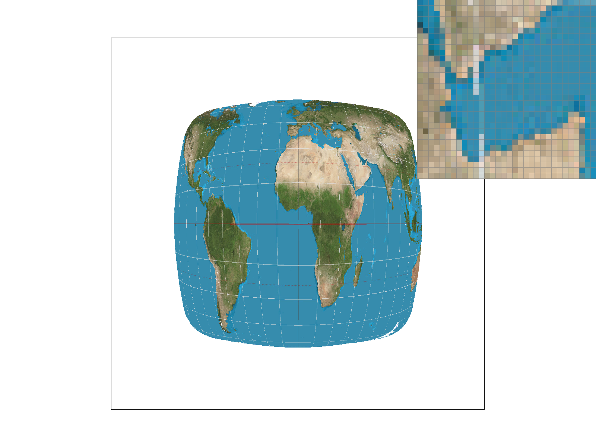

CS184 Summer 2025 Homework 1 Write-Up
Link to webpage: (TODO) Link to webpage
Link to GitHub repository: (TODO) Link to Github repository
Overview
Task1, we implemented basic rasterization, but there were plenty of obvious jaggies.Task2, we used supersampling to deal with the jaggies, and made the edges look smoother.
Task3, we used 3 by 3 matrices to transform a 2D figure in homogeneous coordinates.
Task4, we used barycentric coordinates interpolation to get the color values of all the points in the triangles.
Task5, we implemented texture mapping using pixel sampling with both nearest-neighbor and bilinear interpolation.
Task6, we implemented level sampling for texture mapping by computing screen-space derivatives to estimate the appropriate mipmap level, and used nearest or linear interpolation across mip levels to improve rendering quality.
Overall, we learned to use different methods for sampling and texture filtering, and see how each of them affects the jaggedness of images and in turn makes the images smoother. The tasks also gave us hands-on experience with transforming shapes using homogeneous coordinates, rasterization, rendering images, and texture filtering.
Task 1: Drawing Single-Color Triangles
(1) How to rasterize?
- Given the coordinates of the three vertices of the triangle as input.
- Get the bounding box of the triangle by getting the minimum and maximum x, y coordinates of the three vertices.
- For each pixel within the bounding box, decide whether their centers are within or on the edge of the triangle by using the inside() function.
The inside function:
- Bool. Decide whether a target pixel center is within the triangle
- Given coordinates of the three vertices of the triangle, we fix one of them,
then calculate the cross product of each edge and the line between the fixed vertex and the target pixel center.
- Return true if the target point is on the same side of each edge of the triangle (i.e. the three cross products are of the same sign).
(2) Explain how your algorithm is no worse than one that checks each sample within the bounding box of the triangle.
- We check every pixel center within the bounding box once, by using the point-in-triangle test (i.e. the inside() functions).
Then fill the pixel with color only if the pixel is within or on the edge of the triangle.
- No pixel center outside the bounding box is checked so that I save time and computation.


Task 2: Antialiasing by Supersampling
Supersampling algorithm:
- Divide each pixel into a grid of subpixels
- Rasterization: loop through the subpixels and compute their center’s location; then check whether they lie inside the triangle using the 'inside' function; then store the color values of the pixels that are inside the triangle in the 'sample_buffer'
- Resolve to framebuffer: after all the primitives are rasterized into the sample buffer, use
resolve_to_framebuffer()to compute the final pixel color. For each pixel, average its subpixel values and write the result into the final framebuffer ('rgb_framebuffer_target').
Data Structures used:
- std::vector<Color>:
sample_buffer()stores supersampled color values for all pixels
size: width * height * sample_rate - unsigned char:
rgb_framebuffer_target()is the final framebuffer to be displayed on screen
Modifications:
Originally, we only stored the color values of each pixel center in the sample_buffer. Now, we resize sample_buffer to store all color values of all pixels, including subpixels.set_sample_rate()&set_framebuffer_target():
Originally, we only stored the color values of each pixel center in the sample_buffer. Now, we resize sample_buffer to store all color values of all pixels, including subpixels.rasterize_triangle():
After we resized the sample_buffer to contain color values of all pixels, we averaged the color values of each sample_rate times sample_rate grid. The, the results are written into reb_gramebuffer_target, which is ultimately displayed.resolve_to_framebuffer():
Since lines and points are not supersampled, we modified this function to write the same color to all sub-pixels within a pixel when drawing lines and points.fill_pixel():


Why the results above are observed?
-> How does supersampling antialias our triangles? Why is supersampling useful?
Supersampling means that we sample each pixel multiple times instead of only once as we did without supersampling.
We also average the results of sub-pixels within the pixel grid.
As a result, the pixel’s color does not only depend on its center or any single point within it,
Instead, it depends on several samples, which softens the harsh transition between filled and empty pixels, producing smoother triangle edges without jaggedness.
For example, the final color of a pixel partially covered by the triangle is an average between triangle color and the background,
and is neither the triangle color nor the background color anymore.
This explains the results, where there seems to be more 'blurred' pixels as the sample rate increases.
Task 3: Transforms
Idea: a dancing Christmas tree
Modifications in transform.cpp:
We implemented affine transformations (rotation,
translation, and scaling) by using 3×3 matrices in homogeneous coordinates,
where a 2D point (x, y) is transformed to a 3D vector (x, y, 1).
This unified representation allows for combining multiple transformations efficiently in the 2D rendering pipeline.
Rotation
cosθ -sinθ 0 sinθ cosθ 0 0 0 1 Translation
1 0 dx 0 1 dy 0 0 1 Scaling
sx 0 0 0 sy 0 0 0 1
Modifications in robot.svg:
- Head
- Deleted a polygon
- Color: changed the original red to Christmas red
#C8102Eby adjusting the code forfill - Adjusted the three vertices of the triangle by modifying the
pointsattribute
- Right hand
- Rotated the two polygons together by 45 degrees counterclockwise
- Color: changed the original red to Christmas green
#007A33by adjusting the code forfill
- Right leg
- Rotated the two polygons together by 45 degrees clockwise
- Rotated the lower polygon by 90 degrees counterclockwise
- Color: changed the original red to brown
#8B4513by adjusting the code forfill
- Torso
- Adjusted two vertices by modifying the
pointsso that the torso looks like a tree trunk - Color: changed the original red to Christmas green
#007A33by adjusting the code forfill
- Adjusted two vertices by modifying the
- Left leg
- Color: changed the original red to brown
#8B4513by adjusting the code forfill
- Color: changed the original red to brown
- Left hand
- Color: changed the original red to Christmas green
#007A33by adjusting the code forfill
- Color: changed the original red to Christmas green
Task 4: Barycentric coordinates
Barycentric coordinates are a way to represent any point inside a triangle as a weighted average of the color values of its three vertices. If we have a triangle with vertices A, B, and C, and an arbitrary point P inside it, then P can be written as:
P = αA + βB + γC
Where:
- α + β + γ = 1
- α, β, γ ≥ 0 if P is inside the triangle
Each of the weights α, β, γ describes how "close" the point is to one of the triangle’s corners. For example, if α is close to 1, the point P is close to vertex A.
In the image below (from Google), we have a triangle with three vertices A, B, and C. Each vertex has weights (like 1kg bags) "attached" to it, simulating gravitational pull. These weights represent the influence each vertex has over an arbitrary point P.

Algorithms of Task4:
- Get the bounding box of the triangle to limit the sampling region.
- For each pixel within the bounding box, loop through all subpixel sample positions.
- Calculate barycentric coordinates (alpha, beta, gamma) for each sample using the formulas below, which are mentioned in lecture.
- Store the interpolated color values in the sample buffer.
Here's our rendered test7.svg with sample rate set to 1:
Task 5: "Pixel sampling" for texture mapping
Pixel sampling:
Pixel sampling is a way to figure out what color to use when mapping a texture onto a triangle. Since the UV coordinates are usually floating-point values, they don’t point exactly to the center of a texel, so we need to choose how to get the color at that location.
How we implemented pixel sampling:
We implemented two types of pixel sampling: nearest and bilinear. In the nearest method, we rounded the UV coordinates to the closest integer and returned the texel color at that exact location. This method is fast and simple, but it can produce blocky results when the texture is zoomed in. On the other hand, the bilinear method interpolates between the four nearest texels. It uses the fractional parts of the UV coordinates to weigh the contribution of each of those four colors. The result is much smoother and looks better, especially when textures are stretched or viewed at an angle.
Nearest Sampling: Texture::sample_nearest(Vector2D uv, int level)
- Retrieve the texture image at mipmap level 0.
- Get the pixel width and height of the image.
- Convert the normalized uv coordinates to integer pixel coordinates, locating them at the center of the nearest texel.
- Clamp the computed pixel coordinates to ensure that x and y are within the range [0, width - 1] and [0, height - 1].
- Return the color at pixel (x, y) using mip.get_texel(x, y).
Bilinear Sampling: Texture::sample_bilinear(Vector2D uv, int level)
- Retrieve the texture image at the specified mipmap level.
-
Calculate floating-point pixel coordinates:
float x = uv.x * width - 0.5f;
float y = uv.y * height - 0.5f; - Identify the four surrounding integer texels around (x, y), starting from the bottom-left corner: (x0, y0), (x1, y0), (x0, y1), (x1, y1).
- Compute relative positions within the texel grid: sx = x - x0, sy = y - y0.
- Extract the colors at the four corners: c00 (bottom-left), c10 (bottom-right), c01 (top-left), c11 (top-right).
- Interpolate horizontally using sx: blend between c00 and c10, and between c01 and c11.
- Interpolate vertically using sy between the two horizontal results to get the final color.
nearest; sample rate: 1
bilinear; sample rate: 1
nearest; sample rate: 16
bilinear; sample rate: 16
Differences
The relative difference between nearest and bilinear sampling mostly shows up when the texture is being magnified or when there are sharp color changes in the texture (like black and white checkerboards).
Nearest sampling simply picks the color of the closest texel. This can lead to a blocky and pixelated appearance, especially when a texture is zoomed in. There’s no blending at all, so the edges between texels can appear harsh and unnatural.
Bilinear sampling blends the four surrounding texels based on how close the UV coordinate is to each of them. This results in smooth transitions between colors, which reduces aliasing and makes the texture look more natural. The improvement is especially noticeable on gradients or detailed textures viewed at an angle or under high zoom.
Task 6: "Level Sampling" with mipmaps for texture mapping
Level sampling：
Level sampling is a technique used in texture mapping to decide which mipmap level to sample from. It helps reduce aliasing and improves texture quality, especially when the object is far away or seen at a steep angle. In this task, we implemented three types of level sampling: L_ZERO, L_NEAREST, and L_LINEAR.
For L_ZERO, we always sample from the base level (level 0), which is simple but can cause aliasing when the texture appears small. For L_NEAREST, we computed the mipmap level using the screen-space derivatives of the UV coordinates, then round it to the nearest integer and use that level. For L_LINEAR, we compute the level as a float, then sample from two adjacent mipmap levels and blend them based on the fractional part.
To calculate the level, we implemented the get_level() function, which computes the difference between nearby UV coordinates and scales it using the texture resolution. This gives us an estimate of how much detail is needed. Finally, we modified sample() to use the selected sampling level and pixel sampling method (nearest or bilinear).
Tradeoffs between speed, memory usage, and antialiasing power：
1. Speed
L_ZERO is the fastest because it always samples from level 0, without doing any extra calculation.
L_NEAREST is slightly slower since it needs to compute the mipmap level once for each sample.
L_LINEAR is the slowest because it samples from two mipmap levels and blends the results.
2. Memory Usage
L_ZERO uses the least memory because it only accesses the base level of the texture.
L_NEAREST still uses little memory, but it may access different mipmap levels depending on the screen space.
L_LINEAR uses more memory since it fetches from two levels at once and blends between them.
3. Antialiasing Power
L_ZERO has poor antialiasing and causes lots of aliasing, especially when zoomed out.
L_NEAREST improves antialiasing by using a better matching mipmap level, but it’s still a hard switch between levels.
L_LINEAR has the best antialiasing because it smoothly blends between levels, avoiding sharp transitions and aliasing.